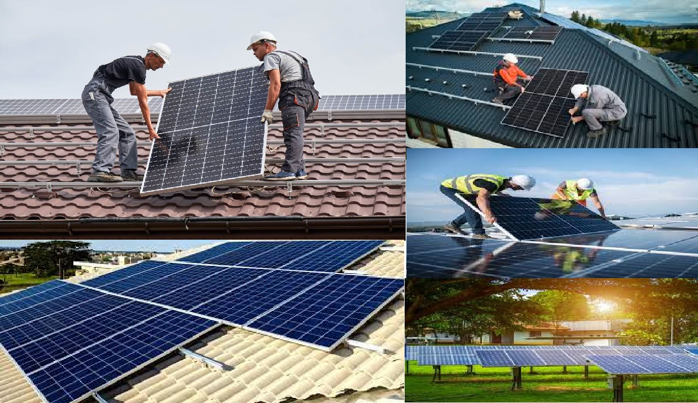

As energias limpas, como a solar, são essenciais para proteger o meio ambiente e combater as mudanças climáticas. Ao contrário das fontes tradicionais, que usam combustíveis fósseis e poluem, as energias renováveis são sustentáveis e quase inesgotáveis.
A energia solar transforma a luz do sol em eletricidade, uma fonte abundante e acessível em muitas partes do mundo. Investir em energias limpas ajuda a reduzir a emissão de gases de efeito estufa e a depender menos de fontes não renováveis, garantindo um futuro sustentável.
Além dos benefícios ambientais, a transição para energias renováveis pode gerar uma economia mais verde, criando empregos e novas tecnologias. Com o avanço de soluções como os painéis fotovoltaicos, mais pessoas e empresas podem adotar energia limpa, contribuindo para um planeta mais saudável.
Em um telhado de uma casa.
A energia solar, uma das fontes de energia renovável mais promissoras, tem uma longa e fascinante história que remonta a milhares de anos. Ela está ligada à exploração e aproveitamento da luz e do calor do sol, e embora o uso moderno de tecnologias solares seja relativamente recente, a ideia de utilizar a energia do sol tem sido uma constante ao longo da história humana.
O primeiro registro do uso da energia solar pode ser rastreado para civilizações antigas, como os egípcios e gregos, que utilizavam o calor do sol para aquecer água e alimentos. Os romanos também usavam espelhos para concentrar a luz solar, especialmente para fins de aquecimento. No entanto, foi somente no século XIX que a pesquisa científica começou a avançar no campo da energia solar. Em 1839, o físico francês Alexandre Edmond Becquerel fez uma descoberta fundamental ao observar o fenômeno da fotovoltaica. Ele notou que certos materiais geravam eletricidade quando expostos à luz solar, um princípio que mais tarde seria a base para a tecnologia dos painéis solares.
A primeira célula fotovoltaica prática foi criada em 1954 pelos cientistas americanos Daryl Chapin, Calvin Fuller e Gerald Pearson da Bell Labs. Esta célula, composta por silício, foi capaz de converter luz solar diretamente em eletricidade e tinha uma eficiência de cerca de 6%, o que foi um avanço significativo. Embora as primeiras células solares fossem caras e usadas principalmente em satélites espaciais, o progresso já estava em andamento.
Nos anos 1950 e 1960, a energia solar se popularizou no contexto da exploração espacial. Satélites como o Vanguard I, lançado em 1958, foram equipados com células solares, marcando o início do uso da energia solar no espaço. Esse foi um marco significativo para a tecnologia, mostrando que a energia solar poderia ser uma fonte confiável em ambientes extremos. Nos anos 1970, com a crise do petróleo e a crescente preocupação com fontes de energia não renováveis, a energia solar começou a ser vista como uma solução viável para a produção de eletricidade. Foi nessa década que o governo dos Estados Unidos e outras nações começaram a investir mais significativamente em pesquisa e desenvolvimento de tecnologias solares.
A partir dos anos 1990, a eficiência das células solares aumentou significativamente, e os custos começaram a cair. As inovações tecnológicas, como os painéis solares de silício cristalino, melhoraram a captura da luz e a conversão em eletricidade, tornando os sistemas solares mais acessíveis para residências e empresas. O surgimento de novos materiais, como células solares de filme fino e células solares orgânicas, prometem novas melhorias na eficiência e redução de custos. Na década de 2000, a instalação de sistemas solares fotovoltaicos domésticos começou a crescer, principalmente devido a incentivos governamentais e políticas de apoio em vários países, como a Alemanha, que se tornou um líder mundial na adoção de energia solar. Nos últimos anos, a China também se tornou um grande produtor e consumidor de energia solar, ajudando a reduzir ainda mais os custos globais. Hoje, a energia solar é uma das fontes de energia renovável mais acessíveis, com tecnologias que oferecem soluções tanto para a geração de eletricidade em larga escala quanto para aplicações residenciais e comerciais. As fábricas solares fotovoltaicas têm se espalhado pelo mundo, e o setor continua a crescer a uma taxa impressionante.
Nos últimos anos, a energia solar tem experimentado avanços extraordinários. A eficiência dos painéis solares fotovoltaicos aumentou, superando 20% em algumas tecnologias comerciais, e as novas inovações, como as células solares bifaciais (que captam luz em ambos os lados do painel), têm ampliado ainda mais o potencial da energia solar. A energia solar concentrada (CSP), que utiliza espelhos ou lentes para concentrar a luz solar em um ponto para aquecer um fluido e gerar eletricidade, também tem se mostrado uma tecnologia promissora para a geração em larga escala. Além disso, as baterias solares estão se tornando mais eficientes e acessíveis, permitindo que os consumidores armazenem energia para uso à noite ou durante períodos de baixa radiação solar.
O futuro da energia solar é extremamente promissor. Com o avanço de tecnologias como as células solares de perovskita, que têm mostrado alta eficiência e baixo custo, espera-se que a energia solar se torne uma das principais fontes de eletricidade em todo o mundo. A tendência de reduzir os custos de instalação e aumentar a capacidade de armazenamento solar vai continuar, tornando a energia solar mais acessível e eficiente para todos. Além disso, o uso de tecnologias como smart grids (redes elétricas inteligentes) e a integração de sistemas de armazenamento em larga escala vão facilitar o aproveitamento de energia solar, mesmo em horários em que o sol não está disponível.
Digite o nome da sua cidade e clique para buscar informações sobre energia solar.